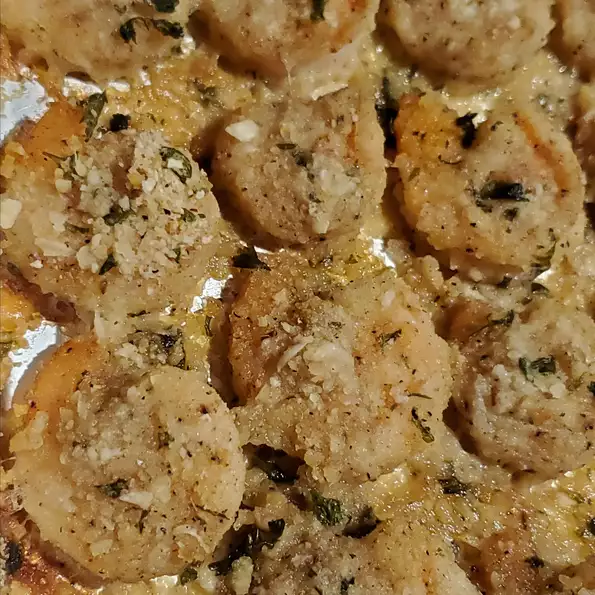

Garlic-Parmesan Shrimp

Delicious crispy shrimp coated in a bread crump-Parmesan mixture. My Family can't get enough of it!
I would suggest doubling the recipe if you have very large eaters because this is addictive!
Serve with pasta and salad.
Prep: 10 mins
Cook: 20 mins
Total: 30 mins
Servings: 4
Yield: 4 servings
Ingredients
- nonstick cooking spray
- 1 cup bread crumbs
- 1 cupshredded Parmesan cheese
- 2 tablespoons dried parsley
- 1.5 teaspoons garlic powder
- 1 pound large shrimp, peeled and deveined
- 2 tablespoons butter, melted, and more to taste
Steps
- Preheat the oven to 350 degrees F (175 degrees C). Spray a 9x13-inch glass casserole dish with nonstick cooking spray
- Combine bread crumbs, Parmesan cheese, parsley, and garlic powder in a large resealable plastic bag. Seal and shake to mix ingredients together. Add shrimp and shake to coat
- Lay shrimp flat in the prepared baking dish. Sprinkle with any bread crumb mixture remaining in the bag. Drizzle melted butter over the top.
- Bake in the preheated oven until starting to crisp, 15 to 20 minutes. Switch to broil setting until topping is light brown, 2 to 3 minutes.